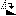
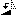
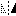
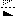

Comment comparer dans la vue de Comparaison d'Images


Comment comparer dans la vue de Comparaison d'Images |
|
|
Alignement du contenu de l'image Vous pouvez comparer des images qui ont été retaillées, pivotées, réfléchies ou recadrées. Sélectionner Taille automatique Sélectionnez Pivoter Sens horlogique  ou Affichage > Pivoter Sens anti-horlogique  pour faire pivoter l'image actuelle de 90 degrés vers la droite ou vers la gauche. Sélectionnez Retourner horizontalement  ou Retourner verticalement  pour retourner l'image actuelle par rapport à ses axes x ou y. Si une image est une version détourée de l'autre, vous pouvez faire glisser la souris sur le panneau de différences pour ajuster la position du coin supérieur gauche de l'image de droite. Pour remettre le décalage à (0,0), sélectionnez Réinitialiser le décalage de différence, ou simplement cliquez sur le libellé du décalage. Pour un contrôle plus fin, utilisez les touches fléchées pour bouger le décalage d'un pixel à la fois, ou Ctrl+Flèche pour se déplacer d'une plus grande quantité. Notez que le panneau des différences doit être sélectionné pour que les fonctions agissent via le clavier. Mode Tolérance Sélectionnez Mode Tolérance pour avoir les pixels de différence qui indiquent les concordances, les différences non importantes et les différences importantes. Il utilise une Tolérance pour définir le plus grand niveau de différence qu'il considère comme non important. Vous pouvez également définir les Remplacements pour ignorer des changements de couleur spécifiques entre les images. Par défaut, des nuances de gris sont utilisées pour des correspondances, des nuances de bleu sont utilisées pour des différences non importantes, et des nuances de rouge sont utilisées pour des différences importantes. Vous pouvez ajuster ces couleurs pour convenir à vos préférences. (Voir Couleurs de la Comparaison d'Images.) Cochez Affichage > Ignorer les différences non importantes Mode Plage de non-correspondance Sélectionnez Mode Plage de non correspondance pour avoir des pixels de différence qui représentent le degré de différence entre les images. Des pixels noirs sont utilisés pour les correspondances, et des jaunes sont utilisés pour des différences. La luminosité représente le degré de différence. Mode Fusion Sélectionnez Mode Fusion |